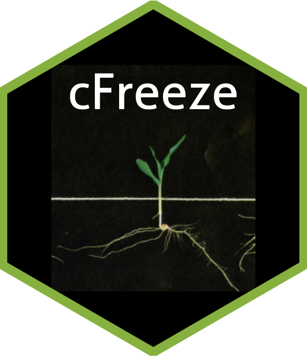

cFreeze 
The purpose of cFreeze is to help corn seed growers understand the potential risk of freeze damage at harvest time. cFreeze calculates the percent occurrence of temperatures below zero degrees Celsius for any day of the year, given the GPS coordinates for a location of interest and the last 30-year historical weather data extracted from Iowa Environmental Mesonet (IEM) closest to that location. cFreeze also calculates the last day to harvest given certain levels of freeze risk after the summer months in the northern hemisphere (NH). See demonstration of functionality below for more details.
To learn more about IEM, follow this link: https://mesonet.agron.iastate.edu/
Requirements
The following package needs to be installed and loaded for cFreeze to be able to extract weather data directly from IEM.
install.packages("apsimx") #if not installed already
library(apsimx)Instalation
cFreeze can be installed directly from its GitHub public repository using the devtools package:
install.packages("devtools") #if not installed already
devtools::install.github("gnbltrn/cFreeze/cFreeze")
#Load cFreeze
library(cFreeze)Basic Demonstration of Funtionality
Once cFreeze is installed and loaded, you can use any of its 5 functions independently:
#Returns the last day to harvest (after June, NH) with no historical risk of freezing.
nofreeze(-118.607994, 41.659626)
[1] "Sep-17"
#Returns the last day to harvest (after June, NH) with less than 10pct historical risk of freezing.
freeze10(-118.607994, 41.659626)
[1] "Oct-2"
#Returns the last day to harvest (after June, NH) with less than 20pct historical risk of freezing.
freeze20(-118.607994, 41.659626)
[1] "Oct-9"
#Returns the percent historical risk of freezing for a any day of the year.
freeze(-118.607994, 41.659626, 10, 30)
[1] 43.33333
#Plots the percent each day of the year had temperatures below 0C.
plotdaysB0(-118.607994, 41.659626)